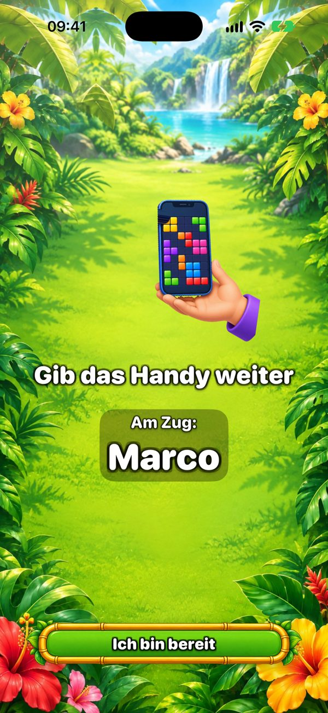
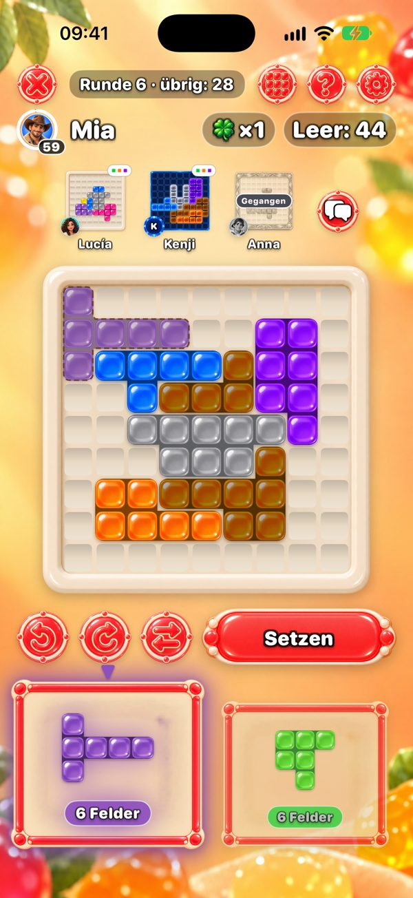
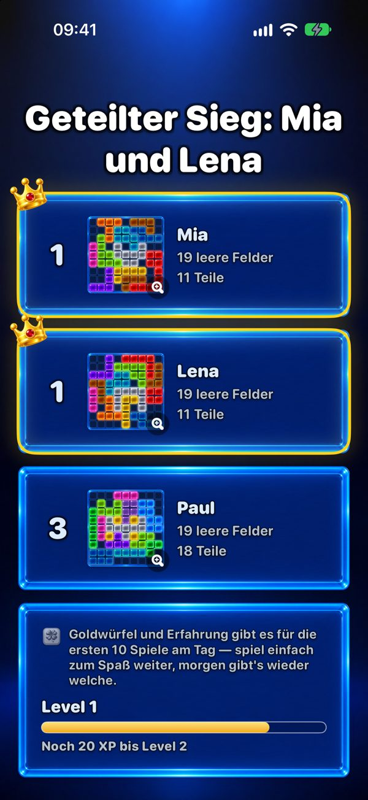

Ein Spiel für alle auf einem einzigen Handy
Du suchst etwas, das die ganze Familie auf einem Handy spielen kann? One More Chance ist ein Rätselspiel, das reihum weitergegeben wird: Jeder füllt sein eigenes 9×9-Feld mit denselben Teilen, und wer die wenigsten leeren Felder übrig lässt, gewinnt.


Wie spielt man auf einem Handy?
Jeder beginnt mit einem zufälligen Startteil, das die Mitte seines Feldes bedeckt. Dann erscheinen jede Runde zwei Teile. Der erste Spieler wählt eines und legt es irgendwo auf sein eigenes Feld — Teile lassen sich drehen und spiegeln — und gibt das Handy weiter. Ein Bildschirm „Gib das Handy weiter“ zeigt, wer dran ist. Alle bekommen dieselben zwei Teile, die Runde ist also fair; nur die Felder wachsen unterschiedlich.

Wie viele können mitspielen?
Zwei Spieler gratis. Mit Premium — ein Kauf, kein Abo — spielen bis zu sechs auf einem Handy oder iPad. Für eine größere Runde ist ein iPad auf dem Tisch ideal.
Kann jeder sein eigenes Handy nehmen?
Ja. Handys in der Nähe verbinden sich über Bluetooth und WLAN — ohne Internet — und alle spielen gleichzeitig und sehen oben die Felder der anderen. Nur wer das Spiel erstellt, braucht Premium für mehr als zwei Spieler.

Wer gewinnt?
Wer die wenigsten leeren Felder übrig lässt. Passt keines der Teile, nimmst du „Noch eine Chance“: ein Extrateil nur für dich. Ein perfektes, komplett gefülltes Feld ist das große Ziel.

Wie lange dauert ein Spiel?
Ein Spiel hat höchstens 20 Runden. Allein dauert es ein paar Minuten; in der Gruppe hängt es davon ab, wie lange jeder überlegt, denn ein Zug ist ein Teil. Mit Premium kannst du einen Zug auf 30, 60 oder 90 Sekunden begrenzen.
Ab welchem Alter?
Im App Store ist das Spiel ab 13 eingestuft, wegen des optionalen Chats mit Freunden und der Werbung. Das Spiel selbst sind bunte Teile auf einem Feld: keine Gewalt, kein Zeitdruck ohne Timer, und zum Legen eines Teils muss man nicht lesen können — Kleinere können neben einem Erwachsenen mitspielen.
Ist es gratis? Gibt es Werbung?
Das Spiel ist gratis. Werbung gibt es nur zwischen Solospielen — nie in einem Spiel mit Freunden, weder auf einem Handy noch auf mehreren. Premium entfernt die Werbung und bringt sechs weitere Themen und bis zu sechs Spieler.
Braucht man Internet?
Nein. Auf einem Handy und auf mehreren Handys in der Nähe funktioniert das Spiel offline. Internet braucht man nur für die Online-Tische, Freunde und die Rangliste des Tagesrätsels.
Spieleabend heute?
Gratis für iPhone und iPad. Gib das Handy weiter und finde heraus, wer die wenigsten leeren Felder übrig lässt.
Android-Version folgt bald.